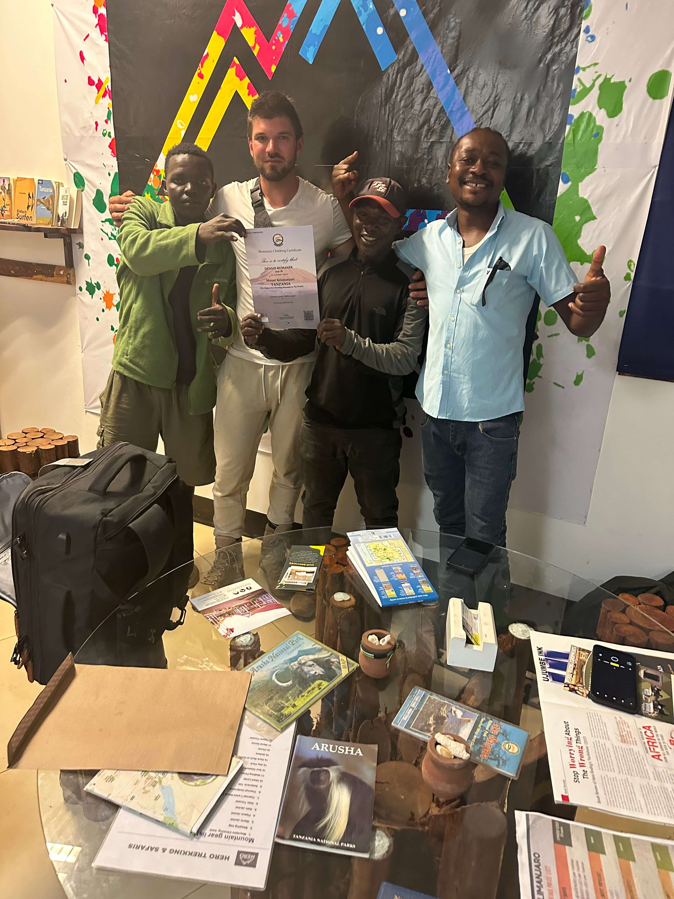
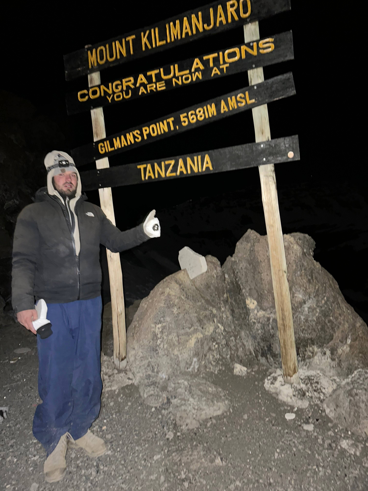
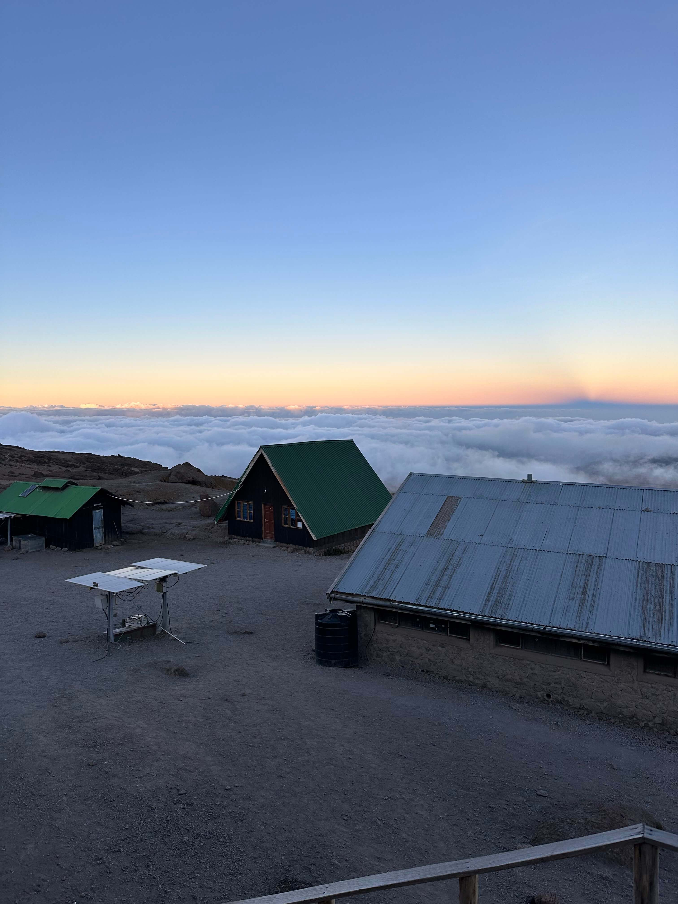

My brutal but beautiful 5-day adventure via the
Marangu Route, also known as the "Coca-Cola Route".
Dates: February 17–21, 2025
Route: Marangu (“Coca‑Cola Route”)
Team: Me + Guide Ayubu + Porter Musa
Highest Point Reached: Gilman’s Point (5,685 m)
Why I Decided to Climb Kilimanjaro
I hadn’t originally planned to summit Africa’s tallest peak.
I was relaxing on the beaches of Zanzibar, soaking up the 30°C heat and stunning
sunsets.
It was beautiful — but honestly, I started getting a little bored.
So I pulled out my phone and searched for other things to do in Tanzania. Safari tours came up
first.
But then I saw it: climbing Mount Kilimanjaro. That was it — the most spontaneous
decision I’ve ever made.
Setting: On a bumpy bus ride from Nungwi to Stone Town port.
I checked flights. There was a 3 PM departure to Arusha — available. I booked it right at the
airport.
The office had ice-cold air conditioning, so I didn’t mind waiting. Others slowly arrived.
I chatted with a guy next to me — turns out, he was the pilot.
I asked if I could film Kilimanjaro from the cockpit. He said yes.
That flight gave me some of the most epic aerial footage I’ve ever captured.
Once we landed in Arusha, there were no taxis or buses. So I walked to the main road and flagged a
local minibus.
While on the bus, a drunk man tried to sell me a trek. I smiled and ignored him.
But once I got off — boom. A crowd surrounded me, all pitching Kilimanjaro
packages.
I told them I’d already done the hike just to get by.
After finally reaching my accommodation, I started digging deeper.
Most tours focused on safaris or visiting Maasai villages — but not Kilimanjaro.
I decided to head deeper into town the next day.
Turning Point: I randomly bumped into a local operator during lunch.
His honesty and passion lit a spark.
That afternoon, I asked around at the guesthouse and did more research.
I ended up booking the trek with that same guy I’d just met.
Maybe it was spontaneity. Maybe fate. Either way — that’s how I decided to climb Kilimanjaro.
Why I Chose the Marangu Route
I chose the Marangu Route for a few simple but important reasons:
Hut accommodation: It’s the only route on Kilimanjaro where you don’t
need to camp.
Cozy mountain huts instead of tents? Yes, please.
“Easiest” route? It’s often called that — but don’t be fooled.
A 5-day climb is still intense and physically demanding.
Acclimatization matters: The 6-day version has a much better success rate.
I went with 5 days, which made altitude sickness more likely.
Meet the Crew

(from left) Musa, Me, Ayubu, Tour Provider/Guide
Ayubu – An experienced and calm guide who knew exactly when to push and when to
pause.
Musa – A strong and cheerful porter who made every uphill feel lighter —
literally and emotionally.
Note: On solo treks, it’s mandatory to have at least 2 porters, 1
guide, and 1 cook.
The Toughest Part: Summit Night

Completely exhausted at Gilman’s Point (5,685 m)
We reached Kibo Hut around noon on Day 3. That’s when the altitude really hit me.
A pounding headache set in — classic Acute Mountain Sickness (AMS).
I had no appetite, but I forced down water all afternoon.
We rested until 11:30 PM, had a light meal, and then began the final summit push
under a star-lit sky.
The summit climb was absolutely brutal.
The trail was steep, the gravel loose — every step felt like sliding back two. We zigzagged to save
energy,
but by 5,200 meters, I hit a wall. I was exhausted. I had to stop often, and even
vomited at one point.
Then came a 30-minute rock scramble. My body was on the edge of shutting down.
“Keep moving,” Ayubu warned. “Or the cold will get you.”
His voice cut through my brain fog. I focused only on putting one foot in front of the other.
Eventually — somehow — I made it to Gilman’s Point.
But that’s where I stopped. The snow was waist-deep. Uhuru Peak was an hour away.
Stella Point? Just 20 minutes.
But I was done. I looked at Ayubu. He didn’t say a word — he didn’t need to.
We both knew: this was my finish line.
No regrets.
Reaching Gilman’s Point was a victory. That night pushed me to my absolute physical and mental
limits.
I didn’t stand on the roof of Africa — but I touched its edge.
And that was enough.
My Favorite Moment

Kibo Hut - When you see the sky and clouds below, it feels like you’re in heaven.
There was one moment that made everything — the struggle, the cold, the exhaustion —
completely worth it.
I was standing above the clouds, looking down at the entire sky stretched out beneath me. It felt
like I was on the edge of the world.
I forgot the aching muscles, the headache, and how hard it had been to get there. All I could think
was:
This is what it means to feel alive.
That image is burned into my memory. I’ve never seen anything like it before, and I may
never see anything like it again.
And that’s okay. Once was enough to last a lifetime.
What You Have to Pay to Climb Kilimanjaro
Climbing Mount Kilimanjaro is an unforgettable experience, but it doesn’t come
cheap.
Whether you’re planning it solo (with a guide, as required) or booking through an agency, here's a
breakdown
of the essential costs just to get to the mountain and complete the standard 5-day, 4-night trek.
I am going to give you estimate pricing of how much I have paid for 5 days Marangu route
and also include what you might pay if you choosing different routes
Park Fees (National Park Fees +
Accomodation
Fee)
National Park Fees
Item
Cost
Breakdown
Conservation Fees
$70 per person/day
$70 × 5 days = $350
Rescue Fee
$20
One-time payment
Total National Park Fees:
$370
Accommodation Fees
Item
Cost
Breakdown
Hut Fee (Marangu Route Only)
$60 per night
$60 × 4/5 nights = $240/$350
Camping Fee (All Other Routes)
$50 per night
$50 x 5/6 nights = $250/$300
Note:
Hut fees only apply to Marangu Route (not possible to use the tent to lower the fee)
For all other routes, you'll sleep in a tent
Prices vary depending on hike duration and route you choose
You pay either hut fee or camping fee - not both
Total Accommodation Fee: $240 - $350
Subtotal Park Fees: $610
VAT (18%) $109
Total Park Fees: $720
Crew Costs (Mandatory)
You're not allowed to climb solo. Here's what you'll need to budget:
Item
Cost
Breakdown
Guide Salary
$30 per day
$30 × 5 days = $150
Porter Salary
$15–20 per day
1 Porter - $15 x 5 days = $75
Cook Salary
$15–20 per day
1 Cook - $15 x 5 days = $75
Guide & Porter Park Entry Fee
$2 per staff member/trip
Typically $2 × 3 staff = $6
Note:
There is usually 2-3 people per climber (guide + porter/guide + porter + cook)
Total Crew Cost: $306
Additional Expenses
Item
Cost
Notes
Equipment Rental
$150–250
(if you don’t already own gear)
Food
$70–100
(for the trek — some operators include)
Transportation
$50-100
(round trip: Arusha - Marangu Gate, some operators include)
Total Additional Expenses: $0 - $350
Tips for Crew (very important and expected)!
Crew Member
Tip per Climber
Guide
$60–80
Porter
$30–50
Cook
$30–50
Note:
Crew members often go above and beyond, sometimes working long hours and enduring difficulties.
They may sleep three to a bed and carry heavy loads to ensure you reach the summit.
Show appreciation—tips are a great way to acknowledge their hard work.
Consider bringing small gifts (like snacks, socks, or gloves) to make their journey easier.
Tips Total: $120–180
Card Payment Fees:
Your bank may charge an international transaction fee (usually 1–3%). Always carry some cash (USD)
just in case.
Total Cost Examples:
Route & Duration
Park Fees (incl. VAT)
Tour Operator Fees
Marangu Route (5-6 days)
719.80–873.20
1,500–2,500
Machame Route (6-7 days)
814.20–955.80
1,700–2,700
Lemosho Route (7-8 days)
955.80–1,097.40
1,900–3,100
Rongai Route (6-7 days)
814.20–955.80
1,800–2,800
Umbwe Route (5-6 days)
672.60–814.20
1,800–2,800
Northern Circuit (9-10 days)
1,239.10–1,380.60
2,600–4,200
Shira Route (7-8 days)
955.80–1,097.40
1,800–2,800
⚠️ Important Reminders
You must go with a registered guide. Rangers will check permits.
Solo climbs are not allowed — a minimum crew is mandatory.
Even if you're organizing everything yourself, hut bookings (on the Marangu route) must be
done via authorized agents.
No wild camping allowed on the Marangu route — huts only.
🧳 What You’ll Need: Kilimanjaro Packing List
Packing right can make or break your summit attempt. Here’s what you must bring:
❄️ Sleeping bag (rated at least -10°C)
🧥 Down jacket or warm parka
🥾 Hiking boots (broken-in)
🌧️ Rain jacket / poncho
🩳 Breathable waterproof pants
🔦 Headlamp (with extra batteries)
🧤 Gloves (thermal + waterproof)
🧣 Thermal layers (base and mid-layer)
🎒 Backpack (with rain cover)
🧢 Balaclava + warm hat
🧻 Toilet Paper
🔋 Power Bank (20,000mAh)
🍼 Water bottles (minimum 2L total)
🕶️ Sunglasses (UV-protected, glacier-grade if possible)
💄 Lip balm (high SPF — trust me, your lips will thank you)
🧴 Pee bottle (to avoid leaving your warm sleeping bag at night)
💡 Pro Tips
💄 Don’t skimp on lip balm — my lips were wrecked after the hike, even
touching them hurt for a week!
🧴 Pee bottle: I didn’t bring one, and I regretted it. You’ll be drinking
2–3L daily, which means night pees. Climbing out of your warm bag, layering up, and walking
to the toilet kills your sleep — and your energy the next day.
The Marangu Route — nicknamed the “Coca-Cola Route” — takes 5 days and 4
nights with
overnight stays in mountain huts. It’s considered one of the more comfortable ways
to climb
Kilimanjaro.
Day 1: Marangu Gate (1,860 m) → Mandara Hut (2,700 m)
Gilman’s → Uhuru Peak: 1–2 hours – snowy rim trail, sunrise views
Uhuru → Horombo Hut: 6–8 hours descent
Total Time: 12–16 hours
Elevation Change: +1,195 m up, -2,175 m down
Highlights: Summit at sunrise, panoramic crater views, personal triumph.
Toughest day of the trek.
Day 5: Horombo Hut → Marangu Gate (1,860 m)
Hiking Time: 5–7 hours
Distance: ~19 km
Elevation Loss: -1,860 m
Terrain: Moorland to rainforest — slippery when wet
Finish: Early afternoon (1–3 PM)
Bonus: You’ll receive a certificate at the gate — if you reached Gilman’s
Point or higher!
🏠 Hut Accommodation Overview
Hut
Altitude
Facilities
Mandara Hut
2,700 m
Small dorms (6–8 beds), basic toilets
Horombo Hut
3,720 m
Larger dorms, water source nearby
Kibo Hut
4,700 m
Cold, stone shelter, no running water
🌦️ Weather & Conditions by Zone
Kilimanjaro's terrain changes dramatically as you climb. Each zone has its own unique
weather, temperature, and challenges. Here's what you’ll walk through on your way to
the summit:
Zone
Terrain
Temp (°C)
Notes
🌳 Rainforest
Muddy, shaded
10–25°C
Humid, warm, frequent rain
🌾 Moorland
Grassy, rocky
5–15°C
Misty, chance of clear skies
🏜️ Alpine Desert
Dry, dusty, rocky
-5 to 10°C
High UV, sunburn risk
❄️ Arctic (Summit)
Snow, icy scree
-10 to -20°C
Freezing, low oxygen, brutal winds
Note: Conditions can change rapidly — always layer your clothing and protect
against both rain and sun.
📅 Best Times to Climb Kilimanjaro (Dry Seasons)
Timing your Kilimanjaro trek is one of the most important decisions you’ll make.
The mountain has two dry seasons — and these are considered the ideal windows for your climb.
✅ 1. January to Mid-March
Weather: Warm, mostly dry
Visibility: Excellent — clear mornings with occasional afternoon clouds
Crowds: Medium
✅ 2. Late June to October
Weather: Very dry and cool
Visibility: Clear skies, incredible sunrises, and star-filled nights
Crowds: High — especially in August and September
🌧️ Rainy Seasons to Avoid
Climbing Kilimanjaro during the rainy seasons is possible — but
not recommended due to trail conditions and poor visibility.
🚫 1. Late March to May (Long Rains)
Heaviest rainfall of the year
Trails become muddy and slippery
Low visibility, leeches in rainforest areas
Some huts can be damp or unpleasant
🚫 2. November (Short Rains)
Rain is less intense than in April, but still significant
Unpredictable weather — sunny one moment, raining the next
Summit views often obscured by clouds
🧭 When Should You Go?
Fewer crowds? → Go in January, early February, or
late June
Best overall weather? → Aim for August or September
Warmer summit conditions? → Choose February or March
Off-peak savings? → Try early December or late October
(but check the forecast!)
🧭 My Tips for First-Timers
🧑 Listen to your guide.They’ve summited dozens (if not hundreds) of times. Trust their pace,
advice, and timing — it’s what gets most people to the top safely.
🐌 Don’t rush — even on the easy first days."Pole pole" (Swahili for “slowly slowly”) will become your mantra.
Stick to it.
🏃♂️ Train with cardio, not just weights.Running helps build lung efficiency and endurance. Add hill sprints or
intervals to prep for long days at altitude.
🧗 Know the odds.If you haven’t been at altitude before, the 5-day Marangu Route is a
fast ascent. Success rates are only around 50%.
💊 Take altitude meds.Acetazolamide (Diamox) is recommended 1–2 days before the hike if
you’re not acclimatised.
💧 Hydrate well.Drink 2–3L of water daily — it helps with acclimatization and
energy.
🎒 Rent gear in Moshi.Boots, waterproofs, torches, and more are available if you’re missing
anything.
💄 Pack lip balm.Trust me — windburned lips can last for weeks and hurt more than you
think.
🚻 Bring a pee bottle.It’s freezing at night, and leaving your sleeping bag ruins your rest —
and your energy the next day.
🧠 Final Thoughts: Would I Do It Again?
Not Kilimanjaro — once was enough. But this experience opened me up to other climbs
around the world.
It was mentally and physically demanding, yet rewarding beyond measure. You learn a
lot about your limits up there — and sometimes, knowing when to stop is just as important
as pushing through.
There’s something powerful about finishing something you weren’t sure you could do. That feeling
stays with you.